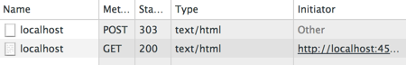

Created by Tim McEwan, @tjmcewan
##Goal
Have you ever thought about how information gets to and from your web browser? In this tutorial we’re going to look at how it all works by exploring HTTP.
We’re going to use Sinatra as a tool to demonstrate some basic web principles. Sinatra is a small framework for creating web applications in Ruby with minimal effort. You can find a list of things built with Sinatra here.
Sinatra is different from Rails. They’re both frameworks for helping you to write web apps, but Sinatra contains fewer features and less magic.
Introduction
HTTP is used to send information between an application (like your Rails Girls app) and a browser. The basis of communication with HTTP is a request/response pair. Requests are sent by the browser to the server (e.g. your app) and the response is sent back from the server to your browser for a user to view.
To make a request in a browser, you need to use a URL. A URL contains a lot of information about what information you are requesting so that the server can send you the correct response.
A URL will contain;
- The protocol you will communicate with
- The domain that has the information you want
- The path to the resource on that server
- Optionally there might be parameters on the end of the url, as key/value pairs, containing extra information about the request
- The // towards the beginning of the URL specifies that this request wants to make contact with a server.
- The ? towards the end of the url signals the end of the file path, and the beginning of any optional parameters.
URLs reveal the resource you want, but the action that needs to be performed on that resource needs to be specified using HTTP verbs.
The most common HTTP verbs are
- GET: fetch an existing resource
- POST: create a new resource. (Usually includes data needed to create the new resource)
- PUT: update an existing resource.
- DELETE: delete an existing resource.
You would have used all these verbs on your Rails Girls app when you enabled it to show, create, edit and delete posts or notes.
A request to a server needs to include both a URL and HTTP verb.
In the following exercises you will build a small coffee listing application that uses a combination of resource folder names and HTTP verbs to show how browsers communicate with your application.
Your app will look something like this in the browser:

0.Install Sinatra » “Hello World”
Let’s start off by getting Sinatra running.
In your terminal, install the gem:
gem install sinatra
gem install sinatra-contrib1.“Hello World”
Create a file called app.rb and paste the following into Sublime Text:
require "sinatra"
require "sinatra/reloader"
get "/" do
"Hello world!"
endAnd back in your terminal, run this code with:
ruby app.rbView your current site at: http://localhost:4567
The information showing now in your browser is the response to a GET request.
When you enter http://localhost:4567 you’re sending a GET request to your Sinatra server.
What you see in the browser is the response from your Sinatra server.
Where you’ve written “/”, you are just specifying the root url, but you can create any path name you want.
In the same file, try creating more pages to visit, using the same syntax as the block above. You can add as many pages as you like, and have them say whatever you want.
e.g.
get "/page-name" do
"This is text on the page"
endIf you need to you can hit Ctrl+C in your command prompt to stop your app. (Just like for your Rails app!), however you don’t need to stop and start to see your changes.
If you get stuck, make sure your app.rb looks like this one.
3. HTML Form » Get Parameters
To start listing coffees in our app, we’ll need an HTML form to send through which coffee we want and how much it costs.
This means sending a request to the Sinatra server, including some information.
To send information to the server, we can use a form.
Replace your get "/" from above with this:
get "/" do
"
<html>
<body>
<form action='/' method='get'>
What: <input name='what'>
Cost: <input name='cost'>
<button type='submit'>add coffee</button>
</form>
<!-- coffees go here -->
</body>
</html>
"
endFor simplicity, this form sends the information to the same URL (“/”).
Refresh your browser and you should see the form you just created.
Now let’s see what the browser sends to the server when you submit the form. Put some text into the form and click the ‘add coffee’ button. Check out your Sinatra logs back in your terminal and you should see something like this:
GET /?what=flat+white&cost=3.50 HTTP/1.1Coach: Talk about where the parameter names come from and what the question mark is doing.
If it’s not quite working, make sure your code looks like this code.
4.Web Inspector » Request Headers
In your browser, open up your web console. (For most browsers, this can be accessed by right clicking something on the page and choosing “Inspect Element”.) I recommend you use Chrome for this; if you are using Chrome, you’re looking for the ‘Network’ tab.
Refresh your browser, then click on the ‘localhost’ line in the web inspector, then in the Headers tab, click ‘view source’. You should see something similar to this:
GET / HTTP/1.1
Host: localhost:4567
Connection: keep-alive
Cache-Control: max-age=0
Accept: text/html,application/xhtml+xml,application/xml;q=0.9,image/webp,*/*;q=0.8
User-Agent: Mozilla/5.0 (Macintosh; Intel Mac OS X 10_9_1) AppleWebKit/537.36 (KHTML, like Gecko) Chrome/33.0.1750.70 Safari/537.36
Accept-Encoding: gzip,deflate,sdch
Accept-Language: en-US,en;q=0.8Coach: Explain what HTTP headers are and they mean.
The important part to note is the first line, which shows you the HTTP verb and the URL it was called on.
Note: If Sinatra says it has “backup from WEBrick”, Ruby’s built-in webserver, then you may see multiple GET requests each time you refresh. Only one request is actually being issued, you can safely ignore the other.
5. Global Variable
So our form is sending the coffee information to our app, but we’re not doing anything with it yet. We should save the coffee information after it is sent to the server.
For simplicity, let’s just store the coffee details in a variable. So that they’ll be available between requests, we’ll need to use a global variable. This is a drastically simplified version of what Rails calls the Model layer.
Add this to your app.rb somewhere (convention says it should be near the top, under the require lines):
$coffees = []This creates an empty array when your app first starts up.
Hint: This global variable won’t be around for very long - it will be reset to the empty array each time the server restarts. Because we’re using Sinatra’s reloader, this will be every time you save your app.rb file. Don’t worry though, it will suit our purposes nicely.
6. Receiving information » Storing Coffees
Now you’ll need to get the information into that $coffees array when the request is received. When you fill in your form and click the submit button, remember that your information is put on the end of the URL, after the ?, to be sent back to the server.
Sinatra grabs that information from the end of the URL and makes it available as a Hash called params. For example:
params = {coffee = 'flat white', value ='2'}You will need to write some code to take them from the params hash and add them to your $coffees variable.
Before you start, first replace <!-- coffees go here --> in your form with:
#{ $coffees.inspect }This will display the $coffees variable in the HTML in your browser so we can tell if coffees are being added to your $coffees variable (i.e. that your code is working).
Hint: Your global variable is an array, so if you get stuck, try Ruby’s Array documentation to find out how you can add information to an array.
If you’re still stuck, check here.
If you’re storing your params correctly, you should be able to refresh the browser and see that a new hash gets added to the $coffees array each time.
6. Tidy Up
That big chunk of HTML in our get code is making it a bit hard to see what our app does. Let’s move it to its own method.
Cut the HTML form out of your get code and paste it into a method called template (keep all your code in the same file). Like so:
def template
# put your HTML form string here
endNow replace the form from your get code with a simple call to the template method, like this:
get "/" do
$coffees << params
template
endThis will also make it easier to re-use the form, should we ever need to.
Hint: Check here if something went awry.
7. Moving Beyond GET
As you saw in the store coffees section, if you refresh your browser, your app adds the information into the $coffees global variable repeatedly. This is because we’re storing the params from the URL each time our get code is requested.
This is a good point to mention that GET requests should not do things that add information to our app - while it does work, like in this instance, it’s too easy for unintended side-effects to occur. In this case it’s better to use a POST request.
Remember GET requests are asking to fetch a resource, whereas POST requests are asking to create a resource.
So armed with that knowledge, let’s change our form’s method to POST:
- Locate the section in the form that specifies the method as
getand change it topost. - Now refresh your browser and submit a new coffee.
Uh oh! Welcome to Sinatra’s lovely error page, if you haven’t encountered it yet today. The message at the bottom should say this:
Try this:
post '/' do
"Hello World"
endThis is Sinatra’s way of telling you that the route you requested doesn’t exist. You may also know this as HTTP error number 404: page not found.
8. Add Post
Let’s add our post code into Sinatra (don’t remove the get one!):
- Grab the “Hello world”
postcode from Sinatra’s 404 page and put it after ourget. (Hint: Do not copy from above; this page uses smart quotes & will break your code.) - Replace the “Hello world” with a call to our
templatemethod. (Hint: Don’t remove the call totemplatefrom ourgetcode.) - Now move the line that stores the coffee params over from the
getcode (ensure this goes above the call totemplate).
As usual, you can check your progress over here.
Now if you refresh the page after submitting a coffee, you should see a warning from your browser that it needs to resubmit the form in order to load the page:

You might have seen this sometimes when you’ve submitted forms online. Having this warning prompts us to think about the consequences of our refresh and we will probably avoid inadvertently adding the same coffee multiple times.
Remember GET requests are asking to fetch a resource, whereas POST requests are asking to create a resource. If you refresh a page on a GET request, you are simply asking repeatedly to see the same page, which usually won’t be a problem.
However, if you refresh a page on a POST request, this means you are resending the POST request, and could be creating a new resource each time you refresh. That’s why the browser gives you a warning before allowing you to do it.
9. Add a Redirect
In order to get around this form-resubmission problem, lets tell the browser to load a different page as soon as it receives the response to our POST. We do this using a special HTTP response known as a “redirect”.
Instead of the call to our template method, we can redirect the browser to another location.
In Sinatra, it looks like this:
redirect "/"Try first, then check it here.
This sends back a special redirect response (HTTP 303) with a location header that specifies where the browser should go:
HTTP/1.1 303 See Other
<…>
Location: http://localhost:4567/To see this in action, have a look in Chrome’s Web Inspector (Network tab) and send your app a coffee:

The first line shows the browser submitting the form via the POST request method. The response it receives is an HTTP 303, containing the Location header. It then issues a GET request for that location (which corresponds to our root URL, “/”) and renders the response it gets from there - which is our HTML template.
Now you can refresh all you want and all you’re doing is requesting using GET, not POST. Your browser doesn’t have to submit the form any more to display that page.
This is the end of the tutorial - you’ve done an excellent job!
Thanks for playing!
Additional Guides
If you were fast and would like to continue on, you can try:
- rendering our coffee list in proper HTML LUCY-TODO